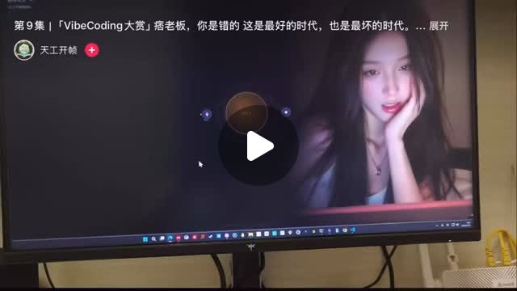

Threads｜sliven0722：GPT-Live／Realtime Voice 接上即時數字人，AI 伴侶互動開始走向低延遲化
來源是褚崇名 Sliven（@sliven0722）在 Threads 分享的案例：抖音上有人把「GPT-Live」接到即時數字人上，讓長髮女性數字人可以即時語音對話，並呈現口型與表情同步。這則貼文值得歸檔，因為它把兩條趨勢接在一起：低延遲、可打斷的語音模型，以及以 LiveTalking、MuseTalk、Wav2Lip 為代表的數字人渲染 / 對嘴管線。

公開 Threads 內容
Threads canonical URL 為 `https://www.threads.com/@sliven0722/post/DbPRKJZjPou`。頁面擷取時主串顯示約 5.9 萬次瀏覽，互動數約 885 讚、64 留言、54 轉發、1,179 分享。
主貼文重點如下：
- 抖音上有人把 GPT-Live 接到即時數字人上。
- 畫面中是一個長髮女生數字人，可做即時語音對話，貼文描述她會吃醋、會胡思亂想，口型與表情同步。
- 貼文稱 GPT-Live 是 OpenAI 7 月中旬上線的全雙工語音模型，可以一邊聽一邊講，不必等對方說完才回。
- 數字人端多半可用開源方案，例如 LiveTalking 這類即時流式渲染，支援 MuseTalk 或 Wav2Lip 等模型，並可搭配自訂形象與聲音。
- 作者的結論是：AI 女友 / AI 伴侶賽道已經開始進入更擬真的互動階段。
圖片 / 影片封面描述
貼文影片封面是拍攝一台電腦螢幕。畫面中右側可見一位長髮女性數字人影像，人物托著臉面向鏡頭，中央有播放按鈕；上方可見「第9集｜『VibeCoding大賽』… 這是最好的時代，也是最壞的時代。… 展開」等字幕，左側有類似「天工開物」的帳號 / 頻道文字。
需要注意：這張在地化保存的是靜態影片封面，只能證明貼文中確實附有一段疑似數字人影片；它本身無法直接驗證「即時語音」或「口型同步」是否成立，這些仍屬貼文描述與影片動態內容宣稱。
官方來源與查核
OpenAI 官方文件目前可查到的是 Realtime / audio 架構與 `gpt-realtime-2.1`、`gpt-realtime-translate`、`gpt-realtime-whisper` 等模型 / API 路徑。Realtime sessions 的定位是維持開放連線，讓應用程式送入音訊、接收事件並更新 session state；官方文件也把低延遲 voice agent 描述為可建立 speech-to-speech agents，能 listen、reason、speak 與 call tools。本文查核時，OpenAI models 與 Realtime docs 內未找到 `GPT-Live` / `gpt-live` 這個正式模型名稱，因此本文把「GPT-Live」視為貼文與社群語境中的稱呼，而非已確認的官方模型名稱。
LiveTalking 官方 GitHub repo 描述它是「Real time interactive streaming digital human」，README 中文說明為即時交互流式數字人引擎，目標是音視頻同步對話；功能列出支援 ernerf、MuseTalk、Wav2Lip、Ultralight-Digital-Human 等多種數字人模型，並支援聲音克隆、數字人說話被打斷、WebRTC、RTMP、虛擬攝像頭輸出與自訂數字人形象。GitHub API 查核時，`lipku/LiveTalking` 約 8.5k stars，授權為 Apache-2.0。
MuseTalk 官方 GitHub repo / README 將其定位為「Real-Time High-Fidelity Video Dubbing via Spatio-Temporal Sampling」與即時高品質 lip-syncing model；README 提到在 NVIDIA Tesla V100 上可達 30fps+，可與輸入影片搭配作為 virtual human solution。GitHub API 查核時，`TMElyralab/MuseTalk` 約 6.2k stars。
Wav2Lip 官方 GitHub repo 對應論文「A Lip Sync Expert Is All You Need for Speech to Lip Generation In The Wild」，是經典的語音到口型同步 / 對嘴生成專案。GitHub API 查核時，`Rudrabha/Wav2Lip` 約 13.1k stars；README 同時提示開源舊模型與商業版本品質不同，導入時需注意授權、品質與商業服務條款。
實務判讀
這則貼文的重點不是單一「AI 女友」產品，而是技術堆疊的拼接成本正在下降：語音模型負責低延遲對話與打斷；LLM / tool calling 負責推理、記憶與任務；數字人管線負責口型、表情、影像輸出；聲音克隆與角色設定則增加個人化。當這些元件能用 WebRTC / RTMP / API 接在一起，AI 伴侶、虛擬主播、客服、直播帶貨與教育講師都會被重新包裝。
但這類應用的風險也很高。越擬真的情感互動越需要明確揭露 AI 身分、避免未成年與脆弱族群被誘導依附，並限制色情、詐騙、冒名、未授權聲音 / 肖像與深偽用途。若產品走向付費陪伴、情感操控或「類真人關係」，除了模型能力，還需要安全設計、內容治理、使用者年齡分級、資料保護與人工申訴機制。
補充邊界
- `GPT-Live` 這個名稱在本文查核時未於 OpenAI 官方 docs 中被確認；較可靠的寫法是 OpenAI Realtime / realtime voice model。
- 靜態封面不能驗證即時口型同步，需實際播放影片或取得 demo 技術細節才能確認延遲、幀率與同步品質。
- LiveTalking、MuseTalk、Wav2Lip 的效果依硬體、模型版本、音訊品質、臉部素材、推理延遲與串流協定而變動。
- AI 伴侶、AI 女友與數字人直播屬高風險產品場景，需把同意、肖像權、聲音權、情感依附、未成年保護、詐騙與平台政策納入設計邊界。